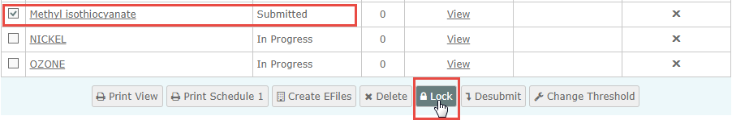
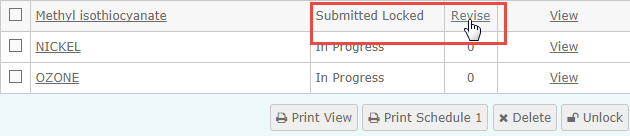
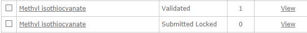

You can create a revised FormR for one that you have already filed, if necessary. Creating a revised FormR creates a copy of the original FormR with an incremented revision number. The original FormR remains intact and is locked. FormRs are automatically locked after July 15th of each year. To create a revised copy the status must be Locked. You can manually lock the FormR if it is not yet locked.
To create a revised Form R:
If the FormR is not locked (the status field is not "Locked"), select the checkbox next to the FormR, then click the Lock button at the bottom.

Select the Revise link now shown in the column next to the status.

In the dialog click OK to confirm that you want to create a new FormR for the chemical.
The status of the original FormR will be changed to Locked. The new version of the FormR will be displayed.

You can now open the new FormR to edit it.